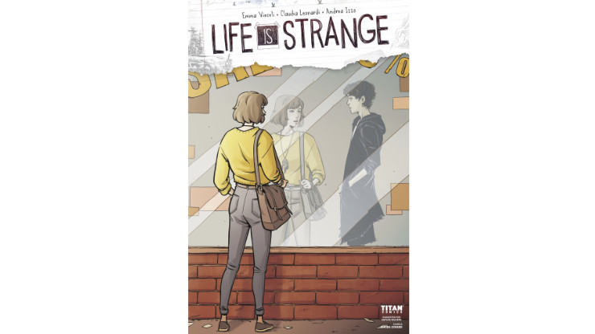
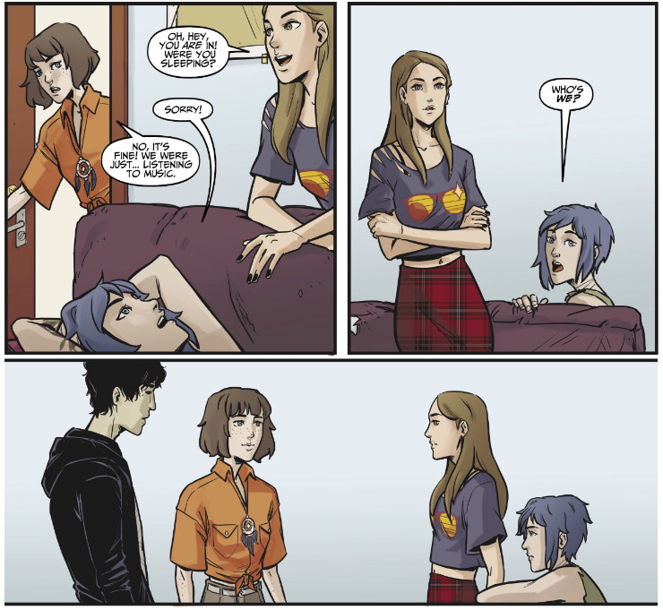
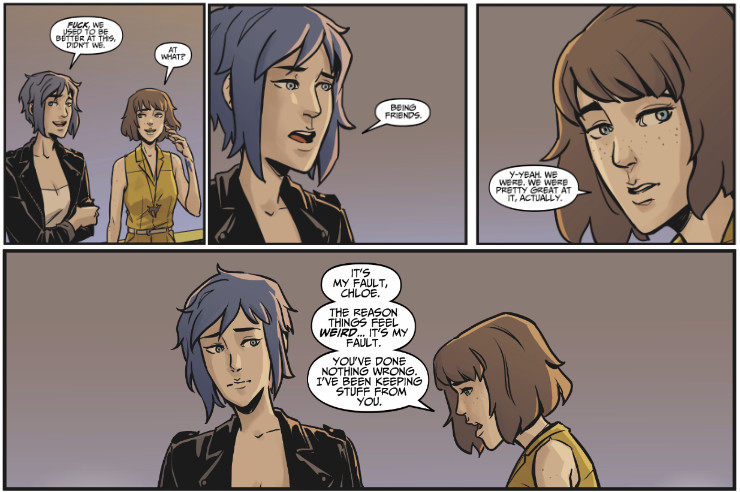

Life is Strange comic book vol. 7 (Waves #3)
The previous issue of Life is Strange comic book has been, in my opinion, the best one yet. It was the first issue that I thoroughly enjoyed. Will the seventh one live up to its predecessor? Let’s find out!
At this point I’m pretty sure that you have already read (or at least looked at) my articles about all the previous issues of Life is Strange comic book, but if you didn’t (or if you simply want to refresh your memory), you can find all of them under the #liscomicbook hashtag.
The cover of issue #7 (the third one in Waves story arc) is pretty simple yet interesting. We can see Max standing in front of a shop window. Next to her reflection there is a reflection of the mysterious guy wearing black, the one that we know from the two last issues. But he is only visible through a reflection, he doesn’t occupy the same physical space as Max. It instantly reminded me of the cover made for the first issue of the comic comic book, the one in which Chloe was next to Max, but her reflection was missing. Is this a sign that the sad guy and Max do not belong to the same timeline or reality? Or maybe neither of them belongs to the reality in which they have met?
I am very skeptical about introducing new original characters into the stories with a well-established set of characters. In this situation I still cannot make myself like this guy, even despite the fact that apparently he will play some crucial role in Waves, otherwise he wouldn’t be featured on the cover. Because this is second-to-last issue, I’m hoping to get some new information about him and why Max can see him even if others can’t (or can only for a brief time).
 The cover if issue #7 of Life is Strange comic book reminds us that there is more than one reality and not everything is visible for everyone
The first scene in this issue shows some shady dealings in the dark alley made at night. Turns out it’s a retrospection showing a little backstory to the sad emo guy’s character. He and his friend were trying to make a deal with some drug dealers but things went wrong. The sad guy – Tristan as it turns out – disappeared and his best friend got killed. The scene moved us to the girls’ apartment, where Tristan was telling his story to Max in her room. It looks like his powers allow him to become invisible. He uses them to survive on the street, although when Max points out it’s technically stealing, he says:
“I survive. I take what I need. Only what I need.”
While it does not lessen his crimes, it is a bit similar to what Max does in her current timeline. She just survives. While she wants to give Chloe happiness (even if it means seeing her with Rachel as her girlfriend), she, for herself, only wants a bare minimum to remain functional. She does not have ambitions, dreams, hopes (beside seeing Chloe happy). She is only a shadow of her former self. She only wants to survive and that’s what she and Tristan have in common.
Also, Tristan mentioned that his parents are the reason why he lives on the street, they have always considered him a black sheep. It is weirdly familiar to another person who, as we know, was not accepted by his parents, or at least by his father (yep, I’m talking about Nathan Prescott). Although being unaccepted by parents is where the similarities end. As far as I know, Tristan didn’t try to kill anyone or didn’t drug anyone (but we still don’t know his full story).
A few hours later Chloe and Rachel arrive. They banter playfully while Rachel tries to convince Max to go to the party her friends throw. Both girls talk about Rachel’s nearing performance on the East Coast which brings some new informations. Apparently Rachel is trying to take Chloe with her, so they won’t be separated for the six-month-long tour. I didn’t know about it and if it happens, Max will be completely abandoned and even more unhappy than she is now.
But anyway, when Rachel knocks on the door to Max’s room, brunette emerges after a while, introducing Tristan to Chloe and Rachel. That scene was awesome (and hilarious). The look on Chloe’s face when she realised Max was not alone in there was gold! And I love how Chloe’s temper got better of her and she started saying something, before Rachel stopped her in a rather unsophisticated way. It was perfect, showing both Rachel’s and Chloe’s personalities in a realistic way, consistent with Life is Strange and Before the Storm.
 The surprised look visible on Chloe’s face when she realised her shy, socially awkward best friend has been socialising with a stranger, was priceless (no pun intended)
It looked like Max and Tristan reached some sort of understanding. Max discovered why sometimes she was the only person to see him and he learned about her and her time-travel powers. That was interesting and, actually, not a bad start. Once I learned more about him he didn’t bother me that much in the story. Besides, his appearance in the girls’ apartment resulted in an interesting situation for Max, who was demanded by Chloe and Rachel to explain what he was doing there.
Max told them that both her and Tristan needed some help, needed to talk, so they had helped each other. Of course this didn’t settle too well with Chloe who only the previous day was trying to convince Max to trust her, to share her burden. And she failed. Max tried to explain it, but I’m not sure it made the situation any better when she talked to Chloe:
“I know this will make no sense to you, and I wish I could explain it, but… sometimes there are things that are easier to share with a stranger than with people you love.”
“You are right, Max… it makes no sense to me…”
That scene was written and drawn awesomely! Especially the anger, the betrayed trust that was clearly visible in Chloe’s eyes made it so emotional. It was the second time Life is Strange comic book has surprised me in a very positive way. Introducing this new dynamics between Max and Chloe in the previous issue, and now complicating it further with the fact that Max was more willing to tell her secrets to a total stranger than her best friend, it made me hope that the rest of Waves will focus on Max and Chloe and their relationship (unfortunately, only as friends in this timeline).
At last, Max, Chloe and Rachel arrived to the party that Rachel’s friends (if we can use that word referring to acquaintances and social media influencers she knows) organised. I must say, it was amazeballs to see the girls in their evening attires (I don’t think Max has ever appeared in a party dress before, both in the game and comic books), although the party was a festival of cliche and superficiality (but it only made our girls to stand out even better). There was a beautiful and nostalgic scene in which Max and Chloe reflected on how they both have changed since childhood.
 We played hide and seek in waterfalls… we were younger…
In the meantime Tristan (who has been invited to the party by Max) decided he didn’t want to be anywhere near that place, invisible or not. He luckily found an abandoned backpack on the street, in which there was some food… and drugs… and a gun.
And then, at the party, all hell broke lose. It turned out that Callie, the girl who organised all of this, OD’d. Max took her phone and ran out of the building and into the street to get better signal… and then she witnessed how the drug dealers from Tristan’s story were aiming at him with a gun, blaming him and his deceased friend for the arrest of one of their own. The issue finished with a gunshot, although we can’t see what happened.
The seventh issue of Life is Strange comic book was… interesting. Intriguing. And it left me wanting to see more. It wasn’t as good as the previous one (which, again, was so great because it focused on Max entirely) but it was still good. The biggest positive surprise (that I still can’t quite explain) is that Tristan’s story did not bother me as much as I expected. It wasn’t cheesy, it wasn’t over-empathised, it was okay. And knowing his story and his relation to Max made me look at him with a little more sympathy (which does not mean that I think he should be featured on the cover as one of the main characters).
I will still hold myself with complementing Waves until I see the conclusion to this story arc presented in issue #8. It all depends on how the story will finish (or, it will rather not finish per se, it will certainly end with some cliffhanger and life-changing event that will set the tone for the third story arc). Both this and the previous issue were enjoyable for me, due to the fact we had much more Max and Chloe screen time than in Waves #1. Although it still hurts me to see that we do not have any realistic chance for Pricefield in this story arc (and probably not in the next one either, if it depicts the events during Rachel’s performances on East Coast). Having said that, there are noticeable improvements to the writing in comparison to Dust and graphics are always on the best level. I recommend reading this issue regardless of your favourite ship or OTP.
Yay!
- focused on Max and Chloe
- we’ve learned about the mysterious guy and his story
- scene when Chloe and Rachel discover Max and Tristan
- Max and Chloe’s talk at the party
- Chloe’s facial expressions
Nay!
- drugs, drugs, drugs!
- Rachel and Chloe’s playful banter in their apartment
- the possibility of Chloe going to the East Coast with Rachel
- Tristan’s encounter with the drug dealers
- the party
Overall summary in three words
interesting, multidimensional, enjoyable